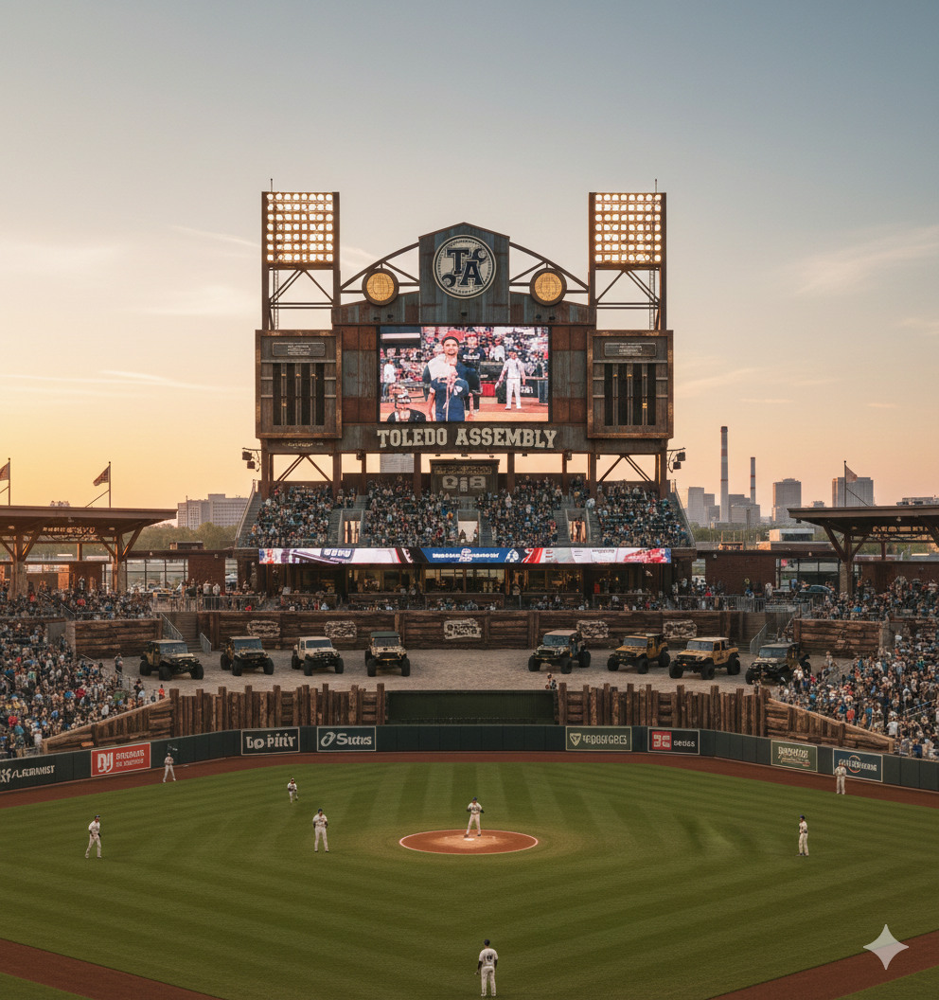
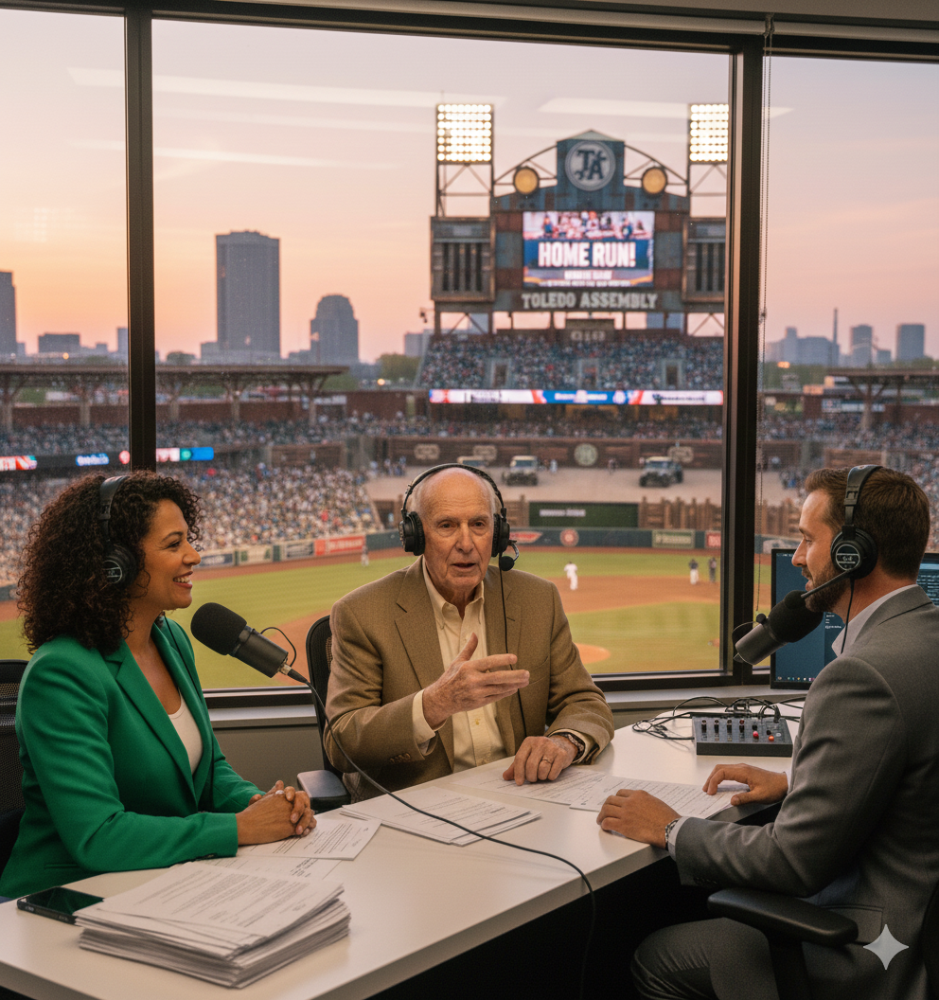
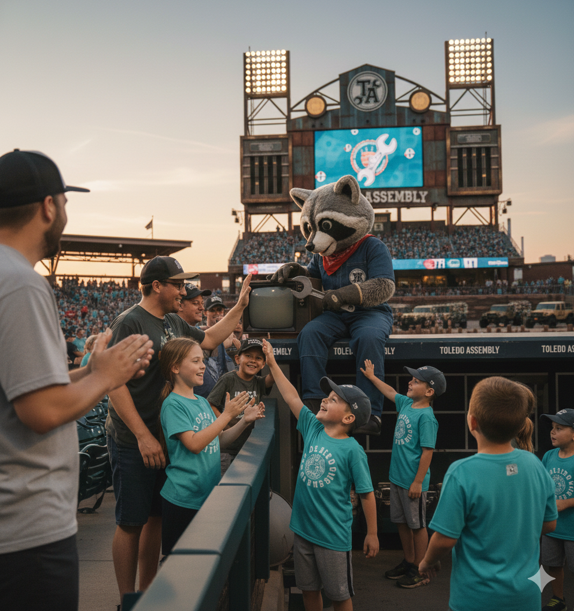
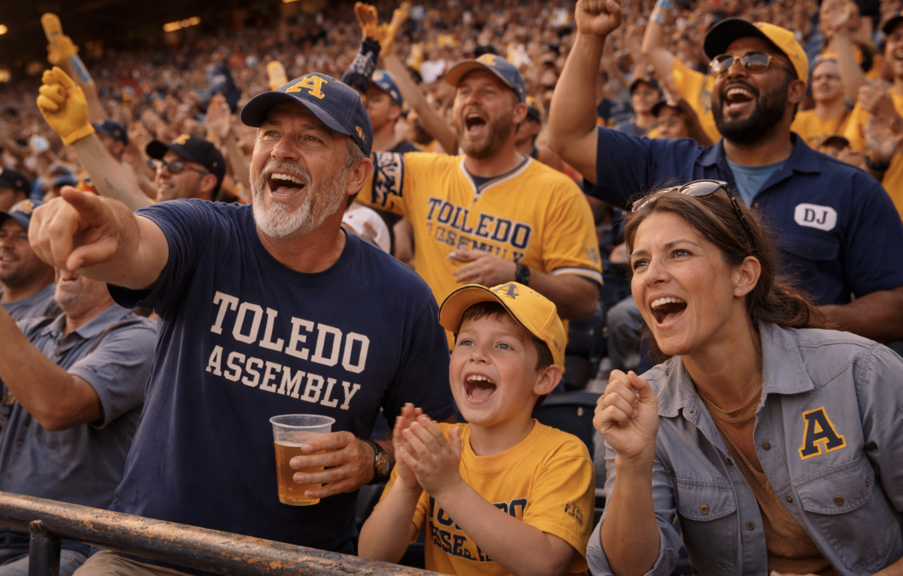

The Assembly doesn’t “get hot.” It gets tight. This is a club built on repetition—clean routes, clean turns, clean decisions. Players talk about “fit” the way machinists do: everything has a tolerance, and Toledo lives inside it. Games feel organized even when they’re messy.

Linehouse Field. A compact park near the river and the old plants—bright lights, clean lines, and a scoreboard that looks like it was borrowed from a factory floor. The concourses smell like pretzels, coffee, and fresh-cut grass—not smoke, not rust.

Voice of the Assembly. Pike calls the game like a checklist—clear, steady, oddly comforting. He’s not a hype man; he’s an air-traffic controller. When Toledo turns a double play, he sounds satisfied, like something clicked into place.

A classic, human-worn shop-floor character: safety vest, work gloves, oversized grin. Rivet is loud in a friendly way—high-fives, goofy dances, and a “tool check” skit between innings.

Families, coworkers, and union-shirt regulars. They clap hard for routine plays. The loudest moment isn’t a homer—it’s a perfectly turned double play with the crowd rising like it practiced.
| SS | Javi “Spec” Moreno |
| 2B | Cal “Torque” Jennings |
| P | Nina Holt |